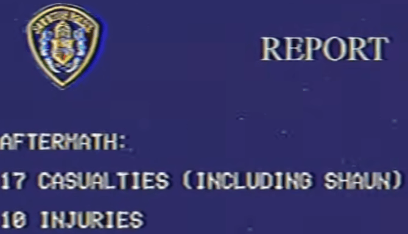
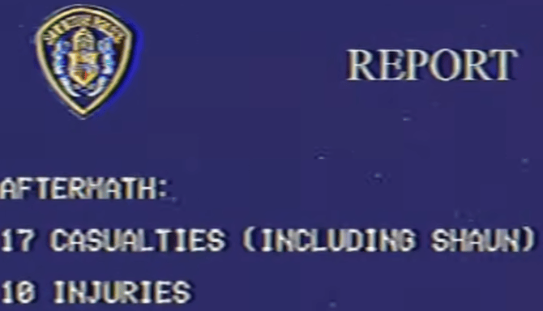
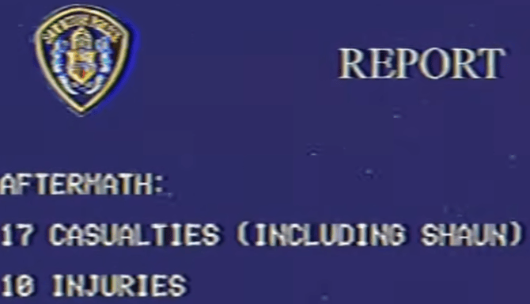

WARNING: Content showed in this article may be disturbing or scarring for some viewers.
Drugs Referenced, Disturbing Imagery & Audio
Created by Patorikku
Introduction
The Smile Tapes created by the Youtuber Patorikku is an Analog Horror series originally split into parts but was then changed to a full series or "season" somewhere in 2023 to 2024. The series takes place in
Videos
The Smile Tapes was originally split into several minute long videos but was recently changed as all the videos were deleted and packed into one video called "The SMILE Tapes (Complete). I will do my best to split up the videos as they were previously.
Volume #1
Announcement
The video named "Announcement" is the first part to the series. It introduces the "Smile" drug which is a substance stated to inflict "Mania, Uncontrollable Laugher, Violent Tendencies" onto hosts and with the most abnormal symptom being a latched, psycopathic grin which the drug was named after. The announcement also states that 500 deaths related to the drug have been reported and the drug itself has currently not been under scientific. Then the announcement instructs the viewers to avoid dark alleys, immediately run from any person suspiciously laughing, that once the drugged have seen you they will begin pursuit, and to never interact with them as the tape abruptly cuts.
This video basically introduces the viewer to the SMILE drug and it's effects on people who take the drug are abnormal compared to drugs or illnesses before.
Smile Investigation Journal Issue No.1
The video named "Smile Investigation Journal Issue No.1" is the second part of the first video. It covers the intial observations of the SMILE drug. SMILE is made up of spores from an unknown species of fungus. The chances of accidently taking SMILE is very high. Then we get introduced to two patients that have been brought to the emergency room on the same day, complaining about severe headaches and acute facial cramps and are taken to the laboratory for observation. Then we learn the four stages of the SMILE drug as the next gets more deformed than the last.
Stage 1 is the intial stage of the fungus which is the first week of when the host has taken the drug. The noticable difference is the slight smile with the host having some resistance. The two patients also suffed meningitis before disapearing within two days. During this stage, the host remains sane...
Stage 2 is the second stage of the fungus which takes place within the second week. Several changes can be seen as the hosts face contort to a wide grin. The patients behavior becoems predatory as uncontrollable laughter becomes present. Any resistance is subdued by the fungus...
Quick Note: This was noted in the video but Patient 2 (The one on the right) suffers from hair loss.
Stage 3 is the third stage of the fungus which facial tissue is permanently damaged and vocals cords stop functioning due to extreme strain, motor and behavior functions begin to decline towards the end of Stage 3. If the hosts ever recover, they would need a face transplant for reintegration...
Stage 4 is the fourth and last stage of the fungus where rapid Senescence (aging) is visible in hosts. In this stage, the brain of the host is in late Alzheimer's stages and has lost complete resemblance from past self...
Patient 2 did not live up to this stage and Patient 1 passed away six weeks into his admission.
After both patients succumbed to the SMILE drug, an Autopsy was performed on them. The autopsy gave us more information on the fungus.
The fungus was found in brain cells as it secreated a substance similar to Acetylcholine, a neurotransmitter that is involved in involuntary movement as well as complex thinking. Meaning that the fungus controlled these brain activities which would explain how motor and behavior functions began to decline in Stage 3. The fungus primarily targeted the Amygdala which is the part of the brain that stimulates fear, anxiety and just over emotional processing, this suggests that the fungus has complete control over the host's emotions.
However 30 minutes into the autopsy, a sudden burst of gas came out of the patients mouth, which were intially thought to be gas, was actually spores of the fungus. As this happened two morticians were in the room and were quarantined.
This marks the end of Smile Investigation Journal Issue No. 1 as we transition to Shawn Gomez, a crutial character in the series.
Shawn Gomez was a normal citizen that had a dog named Max. He kept a journal that dates from Janurary 1993 to December 1994.
The first log that appears is Log 27 on December 4th, 1994 where he was going out for groceries, as a stranger threw presumably flour at him on his way home.
The second log, Log 28 on December 5th, 1994 where he records that he has a vivid dream where he was flying through space as he saw Him...
The very next day on December 6th, 1994, Log 29, he had the same dream again where he was flying through a colorful space, as he saw him but Smiling.
Over the next three (and a half) weeks right before New Years, Shawn Gomez becomes more and more conflicted with the fungus as the day before New Years he goes on a violent killing spree...
Log 29, Dec 6.94 -- He experiences the same dream as last time but "HIM" smiles.
Log 34, Dec 11.94 -- He has the same dream for the past week and at the end of the log, some hexadecimal shows up very briefly
It translates to "SMIL" which can be an incomplete version of "SMILE"
Log 35, Dec 12.94 -- His face won't stop twitching and he has a migraine right now
Log 39, Dec 16.94 -- Shawn's both in Mental and Physical Anguish and goes to the doctor
Log 40, Dec 17.94 -- Doctors diagnose him of Stress and Electrolyte Imbalance
Log 41, Dec 18.94 -- His face starts to form a smile
Log 42, Dec 22.94 -- Max (the dog) passes away but he was doing just fine yesterday.
Log 43, Dec 25.94 -- His friends say he look a lot happier recently.
Log 44, Dec 26.94 -- He feels happy, full of energy
"I felt the mans aura. It changed me, for the better." - Shawn Gomez, Dec 26, 1994
Log 45, Dec 27.94 -- At the start the screen goes black as an analog voice says "Make Everyone Happy" as Shawn Gomez with a wide grin shows up.
Also log 45 and all other logs ahead of it have incorrect spelling this could be the fungus interfering with Shawns motor functions and memory
Log 46, Dec 28.94 -- "World s too unbearable for a simpl man like me // Too muhc vice // To much Sadnes // But I have the power to fx tihs"
Log 47, Dec 31.94 -- "EVRYONEISEESHALLBEC // OME // HAPPY // I HOPE I MAKE YOU / HAPPY
As the final log, log 47 concludes, we get to hear the New Year countdown from 10. After the countdown hits zero, people celebrate but the screen periodically becomes red as police sirens can be heard in the background.
Loud Sound Warning
As the new year audio ends we go to a police report where all the information about the attack is shown...

DISTURBING IMAGERY WARNING
Click at your own risk
From EmortalMarcus's video of the Smile Tapes
"How One Disease Almost ENDED Mankind | The Smile Tapes"
The video abruptly ends as Volume #1 of the Smile Tapes is concluded.
Far History
Far History is the second video to the Smile Tapes Series. The video itself is presented as a educational tape, commonly used in the 1990s. It was also created by Henry Koenig, an unknown character. This tape covers Abiogenesis which is the theory that beings originated from non-living matter and hydrothermic vents. It also covers Earth's transition from a molten planet to an ocean planet with a temperature of 212°F...
Lil Easter Egg
The tape also talks about Panspermia which is the theory that life existed throughout the universe and celestial bodies from far origins crashed into Earth containing life forms. This will be extremely important to the lore later on. The tape also supports this theory as life on celestials bodies that impacted Earth during the Late-Heavy Bombardment (4.1 - 3.8 Ga) could have contained life forms. But in the middle of explaining this idea the tape suddenly glitches and noise becomes louder as it cuts to the end of the tape. This glitching can make sense since in the description of the video. The tape was found in an abandoned warehouse in Chidinilu, California on November, 7, 2021. And the tape itself was severely worn and it appeared to be tampered with...
This clip was taken from EmortalMarcus again since the new Complete video doesn't have the notes from this video.
From: "How One Disease Almost ENDED Mankind | The Smile Tapes", by EmortalMarcus
The second video concludes here.
Further Investigation
"Further Investigation" is the third video in The Smile Tapes and provides us with more information on the SMILE fungus. The video starts with a faint signal detected on November 4th, 1994, being 19 miles south of Chidinilu, California at 1238.3 MHz AM.
Patorikku's Channel
 
